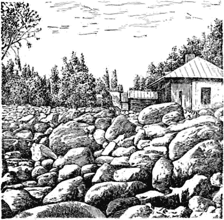
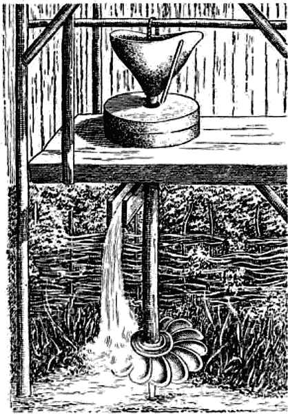
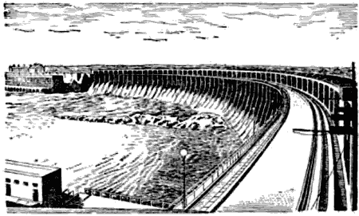

Белый и синий уголь

Каждый знает, что поднять ведро воды на второй или третий этаж нелегко. Работу, которую нужно затратить на подъём груза вертикально вверх, в физике подсчитывают так: величину действующей силы умножают на пройденный телом путь. Если ведро с водой весит 10 килограммов и его надо поднять на высоту 5 метров, то для этого должна быть затрачена работа 10 ? 5 = 50 килограммометров. Здоровый человек совершит эту работу без особых затруднений. Однако, если ему придётся без отдыха совершать такую прогулку вверх и вниз раз десять, он почувствует усталость.
Работа, затрачиваемая на подъём воды, не пропадает: поднятая на определённую высоту вода заключает в себе больше энергии, чем та же вода, находящаяся внизу. При падении воды эта энергия может быть снова превращена в работу. Обратите внимание, как падающие с крыши капли дождевой воды со временем проделывают на земле или даже на каменной панели целые канавки. "Вода камень точит" — метко говорит пословица.
А какую поистине грандиозную работу совершает вода в природе! Миллионы миллионов тонн воды в виде дождя и снега падают ежегодно на землю с высоты сотен метров. И если бы мы попыталась подсчитать, сколько энергии таит в себе вся эта вода, собранная в одну тучу на высоте в 1 километр, то увидели бы, что для получения такого количества энергии необходимо сжечь миллиарды тонн нефти.
И эта энергия не пропадает бесследно для земли — с течением времени вода сильно изменяет её облик.
Вы, конечно, видели овраги, бороздящие наши равнины. Это результат действия воды. Начиная, может быть, с маленькой колеи, оставленной колесом телеги, вода медленно, но настойчиво размывает почву и прорывает в конце концов глубокий овраг.
Тонны земли уносят в моря воды рек, размывающие берега и дно.
Подземная вода роет себе дорогу в горных породах, вымывая миллионы кубических метров камня, создавая огромные пустоты в виде пещер, вызывая оползни и обвалы.
А ливни, особенно весной, в горах! В июле 1921 года город Алма-Ата испытал последствия такого ливня. У истоков реки Алмаатинки тогда ещё лежал снег. Прошёл ливень. Большой оползень запрудил русло реки выше города. Через несколько часов напор воды прорвал эту плотину, и на город ринулась лавина из воды, гальки, громадных валунов, деревьев и обломков, смытых в верховьях строений (рис. 15).

Рис. 15. Вода принесла на улицы Алма-Аты огромные камни.
Нельзя ли разрушительную силу воды превратить в силу созидающую, заставить падающую воду служить человеку?
Использовать всю энергию природной воды, конечно, не представляется возможным. Но часть её может быть поставлена на службу человеку. Это — энергия быстро текущих рек и водопадов, энергия так называемого "белого угля". Только одни наиболее крупные реки и водопады на всём земном шаре могут дать в одну секунду столько энергии, сколько получается от сжигания почти двухсот тонн нефти. Вот какое богатство представляет вода, текущая с возвышенностей суши к морю! И это богатство неистощимо, оно непрерывно восполняется. Но чтобы воспользоваться им, человек должен был научиться управлять по своему желанию огромными массами воды: направлять бурные потоки в определённые русла и заставлять падающую воду совершать полезную работу. Прошли века упорного труда, прежде чем человеку удалось подчинить своей воле водную стихию.
Чтобы проследить историю использования водных сил в нашей стране, нам придётся заглянуть в седую старину. Много веков назад на Руси строились водяные мельницы — мукомольные (рис. 16), крупорушки, суконовальни. В XVII–XVIII веках водяные колёса стали использоваться на медеплавильных и доменных заводах, и к концу XVIII века в России было уже более трёх тысяч «вододействующих» предприятий. Русские "водяные люди" умели сооружать прочные плотины, стойко выдерживающие напор весенних вод. На Урале и теперь действуют плотины, созданные 200 лет назад замечательными русскими мастерами.

Рис 16. Старинная русская мельница (по рисунку XVIII века).
В начале XVIII века в России началось сооружение каналов. Пётр I создал первый водный путь, соединивший Каспий с Балтийским морем. Решив построить канал в Вышнем Волочке, между Тверцой и Цной (для соединения Волги с бассейном Балтики), Пётр I выписал из Голландии шлюзовых мастеров. Амстердамские инженеры в 1709 году выполнили работу, но выполнили её очень плохо: канал оказался слишком мелким, чтобы по нему могли проходить крупные суда. Прошло десять лет. Русский строитель Михаил Иванович Сердюков начал по собственному проекту работу на канале. Сердюков соорудил регулирующее водохранилище, шлюзы и каналы и в 1722 году успешно закончил дело. К середине XVIII века по новому водному пути ежегодно шло до 12 миллионов пудов товаров.
Для развития русской гидротехники много сделал замечательный строитель Козьма Дмитриевич Фролов. Обычно заводы строились непосредственно у плотин, причём каждое водяное колесо приводило в действие какой-нибудь один механизм: молот, мельницу, воздуходувные мехи и т. д. В 1763–1765 годах на Алтае, на речке Корбалихе Фролов соорудил плотину нового типа и направил воду речки в длинный канал, вдоль которого построил три завода для измельчения и промывки руд, содержащих серебро и золото. Этим удалённым от русла Корбалихи заводам уже не угрожало половодье, столь страшное для заводов, построенных близ плотины. Кроме того, Фролов впервые в мире превратил водяной двигатель в центральный мотор, соединённый с помощью приводов со всеми рабочими и транспортными механизмами предприятия.
Заводы Фролова явились прообразом самого совершенного из современных предприятий — завода-автомата.
В восьмидесятых годах XVIII века на Алтае, на Змеиногорском руднике Фролов построил подземную гидросиловую установку. Вода от сооружённой Фроловым плотины, на речке Змеевке (эта плотина работает и ныне) проходила путь в 2200 метров и приводила в движение водяное колесо лесопильной мельницы и гигантские водоподъёмные и рудоподъёмные подземные колёса. Установка Фролова является самым совершенным инженерным сооружением XVIII века.
По масштабам использования водяной энергии Россия долго была одной из передовых стран. Русские учёные и инженеры внесли большой вклад в развитие гидроэнергетики и гидротехники. Среди них и великий русский учёный М. В. Ломоносов и его современники петербургские академики Д. Бернулли и Л. Эйлер, а в более позднее время — В. Ф. Добротворский, Б. Е. Веденеев, Г. О. Графтио, И. Г. Александров, Б. Р. Бахметьев, В. Е. Тимонов и др.
Однако к началу XX века Россия сильно отстала от Западной Европы. В это время энергия падающей воды стала использоваться для получения электрической энергии.
В 1917 году у нас было всего три гидроэлектростанции с общей мощностью около пяти тысяч киловатт, в то время как гидроэлектростанции Европы давали четыре миллиона киловатт.
С первых же дней победы Великой Октябрьской социалистической революции В. И. Ленин выдвинул задачу электрификации страны: "Только тогда, когда страна будет электрифицирована, когда под промышленность, сельское хозяйство и транспорт будет подведена техническая база современной крупной промышленности, только тогда мы победим окончательно". В годы гражданской войны по замыслу В. И. Ленина был разработан план электрификации нашей Родины, план ГОЭЛРО. По этому плану больше одной трети электрической энергии должен давать "белый уголь".
По плану ГОЭЛРО за 15 лет нужно было выстроить девять крупных электростанций. К 1935 году Советский Союз имел их девятнадцать. В 1926 году дал ток в город Ленина первенец советской гидротехники — Волховская гидроэлектростанция. В 1932 году вступила в строй крупнейшая в Европе Днепровская гидростанция (рис. 17). С 1928 года до начала Великой Отечественной войны было построено 39 гидроэлектростанций. В настоящее время общая мощность советских гидроэлектростанций превышает 20 миллионов киловатт.

Рис. 17. Плотина Днепровской гидроэлектростанции.
Ни в какой другой стране нет таких запасов "белого угля", как у нас. Мы обладаем одной шестой частью его мирового запаса. Это больше, чем во всех государствах Западной Европы, вместе взятых. Преимущества "белого угля" перед другими источниками энергии огромно — электроэнергия, полученная на гидростанциях, в несколько раз дешевле электроэнергии, которую дают, например, тепловые станции.
Есть в природе ещё одни явления, которые могут быть для нас поставщиком громадных количеств энергии, — это морские приливы или, как иногда говорят, "синий уголь". В приливах участвуют большие массы воды (в некоторых местах разница между уровнями полной и малой воды превышает 15 метров). По величине энергии "синий уголь" во много раз превосходит "белый".
Использование мощных запасов этой энергии представляется очень заманчивым.
Известно много проектов гидроэлектростанций с применением "синего угля", однако до сих пор "синий уголь" нигде не используется в крупных масштабах. Связано это с тем, что подъём воды совершается в море два раза в сутки, и сооружение электростанций, использующих этот подъём, очень сложно и дорого. Кроме того, станции часто пришлось бы строить там, где нет близко ни городов, ни промышленных центров, ни других крупных потребителей электроэнергии.
В Северном Ледовитом океане и в Тихом океане, омывающим северные и восточные берега нашей родины, наблюдаются большие приливы, но в Балтийском, Чёрном и Каспийском морях они почти неуловимы и не имеют практического значения. В настоящее время сила приливов используется в основном в судоходстве — для входа больших морских кораблей в устья рек и для подъёма судов в доки.